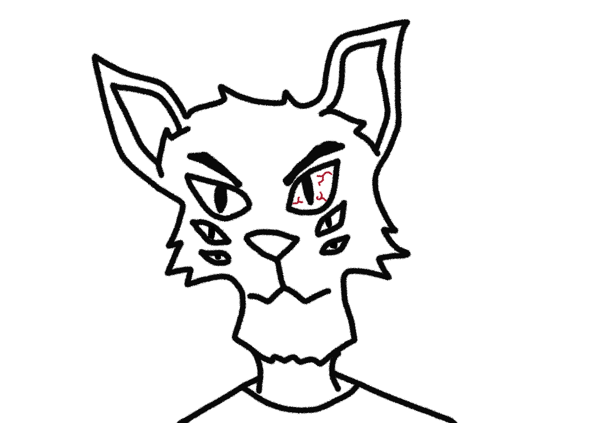

For my work I made an animation of Norton ( my character ) reacting to a nearby object flying by. I decided this animation would best help reflect the cartoonish nature of his universe. I chose to do everything is black with only the sphere in color to show contrast. Making the sphere red made it stand out and his reaction warranted. I approached the timing with his eyes following the sphere as it came into frame. The most challenging part of this was slowly making him grow in each frame by enlarging him little by little. I solved my challenge by using the onion tool and increasing the width of him frame by frame.
 Home Visit Him